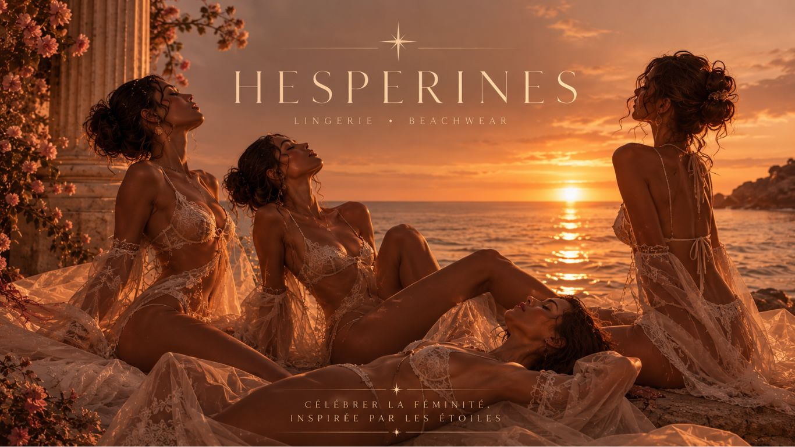
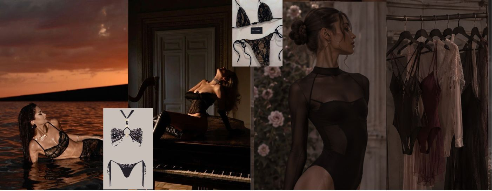
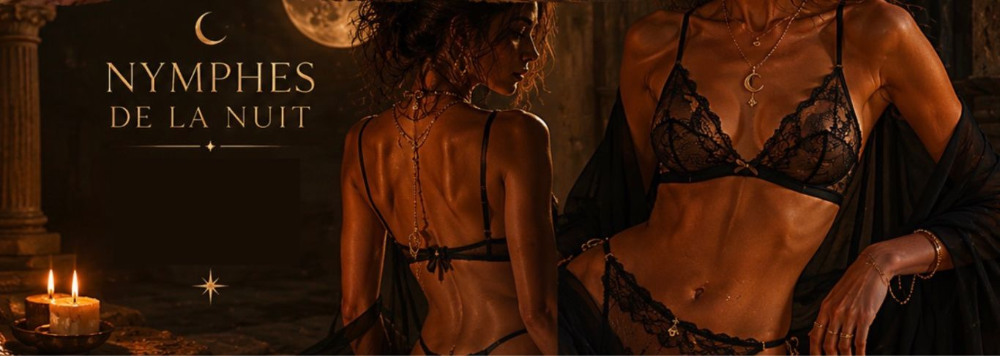
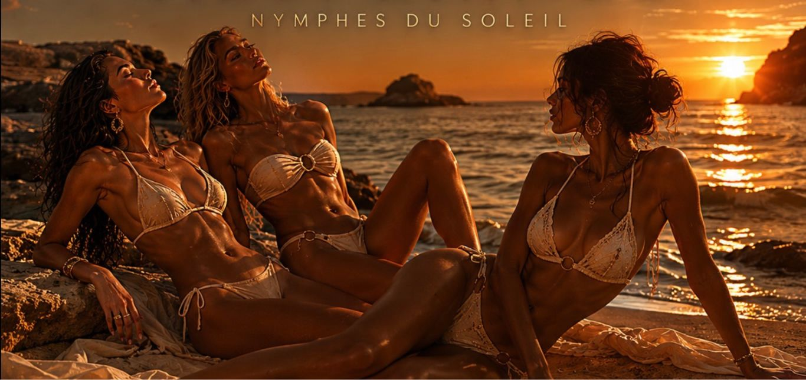

HESPERINES est une marque de lingerie et de beachwear qui célèbre la féminité et sublime les courbes du corps féminin. À travers des matières durables et soigneusement sélectionnées, la marque allie sensualité, élégance et confort. Inspirée de la mythologie et de ses figures féminines, HESPERINES puise dans les origines de la féminité pour créer un univers à la fois intemporel, mystique et raffiné.

LINGERIE
Un travail délicat de la dentelle et de la soie, à travers des ensembles de lingerie raffinés et des vêtements de nuit légers, vaporeux et dramatiques. Des superpositions de transparence, des jeux de matières et des coupes sculpturales qui célèbrent le corps féminin avec sensualité et élégance.

BEACHWEAR
Des maillots de bain et tenues de plage extravagants, sublimés par un travail minutieux de perles et de dentelles adaptées à l’eau, résistantes et extensibles. Des voiles légers et délicats, associés à des coupes audacieuses, qui épousent et mettent en valeur la silhouette tout en garantissant confort et liberté de mouvement.

*Projet fictif
**Certaines images sont généré par l’IA afin de faciliter la projection